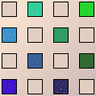
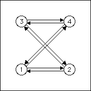
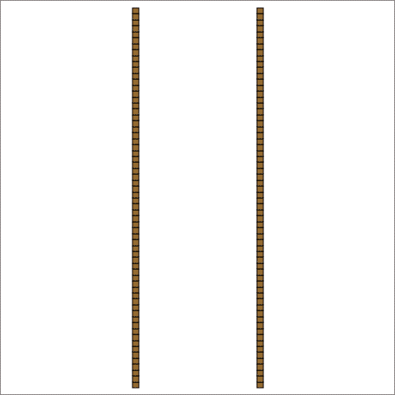
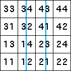

|  |  |  |
| (34)∞ | (43)∞ | |
| (12)∞ | (21)∞ |
| Here are the occupied addresses for the corresponding vertical lines. | ||||||
|  | ||||||
| The allowed transitions are | ||||||
| Here are the corresponding software interface, graph, and attractor. | ||||||
| ||||||
| The endpoints of the lines are | ||||||
|
Return to Line Pairs with 2-Cycle Endpoints.